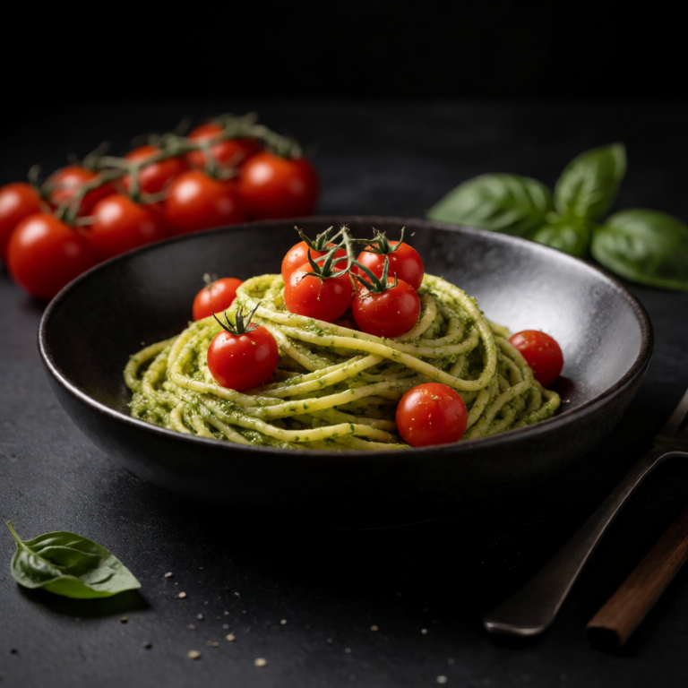

Tuna, olives, capers, and garlic make a salty, briny pasta sauce that comes together while the spaghetti cooks.
At a Glance
Prep
5m
Cook
15m
Serves
1
Difficulty
Easy
Rate this slopBe the first to rate it.
Ingredients
Method
- 01
Cook pasta
Boil spaghetti in salted water until al dente. Reserve a splash of pasta water.
- 02
Make sauce
Heat olive oil in a pan. Add garlic and cook for 1 minute. Add tuna, olives, and capers. Cook for 2 minutes to warm through.
- 03
Combine
Toss the pasta with the sauce, adding pasta water to loosen. Top with parsley.
Slop Notes
This is a variation of pasta puttanesca with tuna instead of anchovies.
Recipe by foidslop · How we create our recipes
The Weekly Slop
Seven dinners for one, one short note, every Sunday. No life story.
One email every Sunday. Unsubscribe whenever. Double opt-in. See the privacy policy.
Keep eating